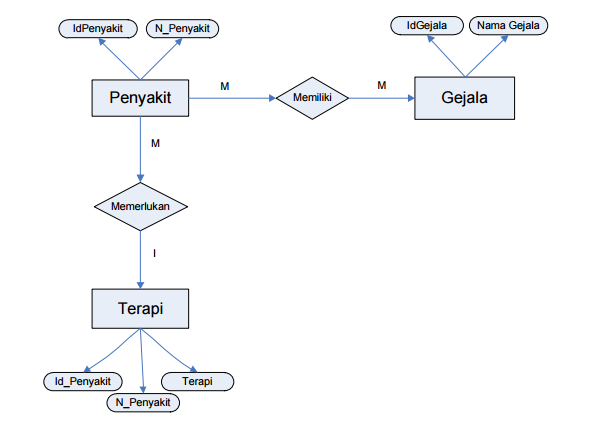

### SISTEM PAKAR
Sistem pakar adalah suatu program komputer cerdas
yang menggunakan knowledge (pengetahuan)
dan prosedur inferensi untuk menyelesaikan masalah
yang cukup sulit sehingga membutuhkan seorang
yang ahli untuk menyelesaikannya (Feigenbaum , 1982).

## Mesin Inferensi
> Mesin inferensi adalah bagian yang mengandung mekanisme fungsi berpikir dan polapola
> penalaran sistem yang digunakan oleh seorang pakar.
### Pengetahuan (Pohon Keputusan)
### Data Flow Diagram (Diagram Konteks)
### Data Flow Diagram (Diagram Zero)
### Entity Relationthip Diagram

### Struktur Menu Program